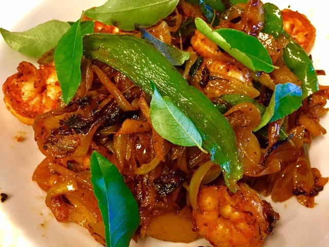

                                    <figure class="cards double">                                        
                                        <figcaption class="caption">
                                        
                                            <!--  Copy your recipie in here -->
                                            <h1><span style="color: #ff0000;">Stir Fried Shrimp</span></h1>
<p>&nbsp;<strong>Ingredients</strong></p>
<ul>
<li>Shrimp 1 lb</li>
<li>Chili powder 2 tsp</li>
<li>Turmeric &frac12; tsp</li>
<li>Salt as required</li>
<li>Onion 1 thinly sliced</li>
<li>Green chilies 2 long slices</li>
<li>Ginger 1 tbsp julienned</li>
<li>Garlic 2 cloves thinly sliced</li>
<li>Curry leaf 1 sprig</li>
<li>Oil as required&nbsp;</li>
</ul>
<p><strong>Method</strong></p>
<p>Peel skin, devein and marinate shrimp with spices and salt.</p>
<p>In a pan heat oil and add shrimp and stir fry on medium heat. When Shrimp is almost cooked add the sliced onion, green chilies, ginger and garlic. Stir fry on high heat. When onion is caramelized, and shrimp is fried (should not take more than a minute or two) remove from heat. Garnish with curry leaves!</p>
<p>&nbsp;</p>
<p>&nbsp;</p>
                                            <!-- Copy Up to here-->

                                        </figcaption>
                                       
                                    </figure>
                                    